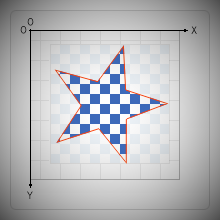
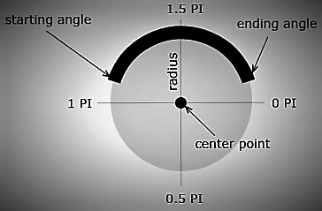
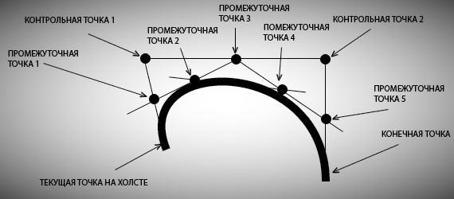
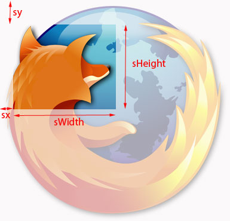
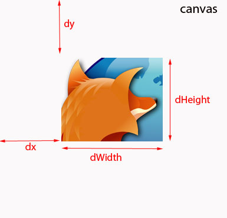

Объявляем, что начинаем новый контур. Это нужно,
если мы хотим задать новый стиль объекту,
который будет нарисован следующим.
// Пример
ctx.lineWidth = 7;
ctx.strokeStyle = "red";
ctx.strokeRect( 50, 50, 100, 100 );
/* Смена стиля */
ctx.beginPath();
ctx.strokeStyle = "green";
ctx.strokeRect( 70, 70, 150, 150 );
/* Смена стиля */
ctx.beginPath();
ctx.strokeStyle = "orange";
ctx.strokeRect( 100, 100, 200, 200 );
Закрыть путь это значит завершить фигуру в начальной точке,
которая была задана методом beginPath().
Канвас попытается начертить прямую линию от текущей точки до начала.
Если фигура уже была закрыта или имеет только одну точку,
то просто ничего не произойдет.
void ctx.closePath();
Сдвигает систему координат канваса на х по горизонтали
и у по вертикали.
void ctx.translate( x, y );
The CanvasRenderingContext2D.rotate() method of the Canvas 2D API adds a rotation to the transformation matrix. The angle argument represents a clockwise rotation angle and is expressed in radians. void ctx.rotate(angle);
Очищает прямоугольник с указанными координатами. Отрицательные
координаты не принимаются. В параметры передаем x и y — координаты
левого верхнего угла прямоугольника, который надо очистить, его width
и height.
// Синтаксис
void clearRect( x, y, width, height );

Как и clearRect() метод Clip() тоже служит для очистки холста. Но здесь
все наоборот - пространство в заданной фигуре останется нетронутым.
Будет очищено все, что снаружи. Сама фигура может быть любой сложности,
и ее нужно нарисовать перед вызовом метода. В примере на картинке очистится все,
кроме того, что внутри звезды.
// Синтаксис
void ctx.clip();
{kind=link}
The CanvasRenderingContext2D.moveTo() method of the Canvas 2D API moves the starting point of a new sub-path to the (x, y) coordinates. void ctx.moveTo(x, y);
The CanvasRenderingContext2D.lineTo() method of the Canvas 2D API connects the last point in the sub-path to the x, y coordinates with a straight line (but does not actually draw it). void ctx.lineTo(x, y);
The CanvasRenderingContext2D.stroke() method of the Canvas 2D API strokes the current or given path with the current stroke style using the non-zero winding rule. void ctx.stroke(); void ctx.stroke(path);
Ширина линии. По умолчанию 1.0.
Дробные, отрицательные значения и ноль игнорируются.
// Синтаксис
ctx.lineWidth = value;
Стиль окончания линии. По умолчанию 'butt'.
// Синтаксис
ctx.lineCap = "butt";
ctx.lineCap = "round";
ctx.lineCap = "square";
Стиль соединения линий. По умолчанию 'miter'.
Длина соединения - miter limit ratio может быть задано
атрибутом miterLimit ( 10.0 - по умолчанию ).
// Синтаксис
ctx.lineJoin = "bevel";
ctx.lineJoin = "round";
ctx.lineJoin = "miter";
ctx.miterLimin = 5.2;
Don't working with the filled shapes. The CanvasRenderingContext2D.lineJoin property of the Canvas 2D API determines how two connecting segments (of lines, arcs or curves) with non-zero lengths in a shape are joined together (degenerate segments with zero lengths, whose specified endpoints and control points are exactly at the same position, are skipped). ctx.lineJoin = "bevel"; ctx.lineJoin = "round"; ctx.lineJoin = "miter";
The CanvasRenderingContext2D.strokeStyle property of the Canvas 2D API specifies the color or style to use for the lines around shapes. The default is #000 (black). ctx.strokeStyle = color; ctx.strokeStyle = gradient; ctx.strokeStyle = pattern;
...

Рисует дугу вдоль окружности с центром в позиции ( x, y ) радиусом ( r ).
Дуга начинается в startAngle и заканчивается в endAngle ( в радианах ).
Необязательный параметр antiClockwise — направление соединения точек
начала и конца дуги. По умолчанию - false — направление
по часовой стрелке. Значение true — против часовой.
// Синтаксис
void ctx.arc( x, y, radius, startAngle, endAngle, anticlockwise );
{kind=link}

Рисует кривую Безье от текущей точки на холсте до указанной через промежуточные (
контрольные ) точки. Если нужно передвинуть начало кривой, можно воспользоваться методом
ctx.moveTo(), который нужно вызвать перед созданием кривой.
Контрольных точек может быть сколько угодно, и задаются они
координатами в параметрах ( controlX, controlY, ... , control-10-X, control-10-Y ). endX,
endY — координаты окончания кривой. Требуются как минимум три точки - первые две, чтобы
задать направление и третья, чтобы закончить кривую.
// Синтаксис
void bezierCurveTo( control-1-X, control-1-Y, control-2-X, control-2-Y, endX, endY );
{kind=link}
The CanvasRenderingContext2D.shadowColor property of the Canvas 2D API specifies the color of the shadow. ctx.shadowColor = color;
The CanvasRenderingContext2D.shadowBlur property of the Canvas 2D API specifies the level of the blurring effect; this value doesn't correspond to a number of pixels and is not affected by the current transformation matrix. The default value is 0. ctx.shadowBlur = level;
The CanvasRenderingContext2D.shadowOffsetX property of the Canvas 2D API specifies the distance that the shadow will be offset in horizontal distance. ctx.shadowOffsetX = offset;
The CanvasRenderingContext2D.fillStyle property of the Canvas 2D API specifies the color or style to use inside shapes. The default is #000 (black). ctx.fillStyle = color; ctx.fillStyle = gradient; ctx.fillStyle = pattern;
The CanvasRenderingContext2D.globalAlpha property of the Canvas 2D API specifies the alpha value that is applied to shapes and images before they are drawn onto the canvas. The value is in the range from 0.0 (fully transparent) to 1.0 (fully opaque). ctx.globalAlpha = value;
Создает объект линейного градиента. В параметры передаем координаты
начальной и конечной точек. В метод addColor кроме цвета нужно передать
положение цвета. Значение - положительное число от 0 до 1.
// Синтаксис
После создания объекта градиента, можно ему присвоить любое количество цветов с помощью метода addColorStop. Градиент появится на холсте после применения метода fill() или stroke().
ctx.createLinearGradient( x0, y0, x1, y1 );
Создает объект радиального градиента, полученный при помощи двух
окружностей, с координатами, переданными в параметры. x0, y0, r1 -
координаты центра и радиус первой окружности, x1, y1, r2 - аналогично
для второй. Если нужно, можно добавить цвета при помощи addColor().
Градиент появится на холсте после применения метода fill() или stroke().
// Синтаксис
ctx.createLinearGradient( x0, y0, r1, x1, y1, r2 );
Добавляет стоп цвет объекту градиента. Можно использовать как с линейным,
так и с радиальным градиентами. Принимает в параметры позицию градиента
( от 0.0 до 0.1) и цвет ( название, код цвета или его rgb/rgba представление.
Стоп-цветов может быть сколько угодно.
// Пример
var linearGradient = ctx.createLinearGradient( 50, 50, 150, 250 );
linearGradient.addColorStop( 0, "green" );
linearGradient.addColorStop( 0.5, "blue" );
linearGradient.addColorStop( 1, "yellow" );
ctx.strokeStyle = linearGradient;
ctx.moveTo( 50, 50 );
ctx.lineTo( 150, 250 );
ctx.stroke();
Делает заливку фигуры. Цвет заливки сохраняем в свойство
fillStyle. При вызове метода fill() все открытые фигуры будут закрыты автоматически,
поэтому в таком случае можно не вызывать метод closePath().
// Пример
ctx.fillStyle = "blue";
ctx.arc( 100, 120, 50, 0, 2 * Math.PI, false );
ctx.fill();
Рисует залитый прямоугольник. Цвет будет тот, который определен
в свойстве fillStyle или черный по умолчанию. В параметрах -
координаты верхнего левого угла прямоугольника и его размеры.
// Синтаксис
Кроме этого, этот метод часто используется для быстрой очистки
поверхности холста с сохранением всех настроек контекста.
Это можно сделать, например, так:
fillRect( x, y, width, height );
// Пример
ctx.fillRect( 0, 0, canvas.width, canvas.height );
...
The CanvasRenderingContext2D.strokeRect() method of the Canvas 2D API paints a rectangle which has a starting point at (x, y) and has a w width and an h height onto the canvas, using the current stroke style. void ctx.strokeRect(x, y, width, height);
The CanvasRenderingContext2D.fillText() method of the Canvas 2D API fills a given text at the given (x, y) position. If the optional fourth parameter for a maximum width is provided, the text will be scaled to fit that width. void ctx.fillText(text, x, y [, maxWidth]);
The CanvasRenderingContext2D.strokeText() method of the Canvas 2D API strokes a given text at the given (x, y) position. If the optional fourth parameter for a maximum width is provided, the text will be scaled to fit that width. void ctx.strokeText(text, x, y [, maxWidth]);
Выводит изображение на хосте. Делает это по-разному.
В простейшем варианте просто отобразит картинку.
// Синтаксис
В параметры передаем предварительно созданный JS объект изображения
и координаты холста, где должен быть верхний левый угол картинки. Будут
сохранены реальные размеры.
Второй способ - аналогично, но с изменением размера изображения. Соответственно
параметров должно быть немного больше. К первоначальному комплекту добавляем
желаемые размеры изображения. Понятно, что качество картинки при этом может
несколько пострадать.
ctx.drawImage( image, x, y );
// Синтаксис
Кроме этого есть возможность вывести кусок изображения. К параметрам добавляем
sx, sy — координаты верхнего левого угла вырезаемого слайса. sWidth, sHeight - его
размеры. dx, dy — координаты верхнего левого угла обрезанного изображения и
dWidth, dHeight — размеры обрезанного изображения на холсте.
ctx.drawImage( image, x, y, width, height );
// Синтаксис


Будет немного понятнее, если посмотреть на картинку. Спецификация позволяет любые
изображения - это может быть обычная картинка, картинка созданная при помощи методов
из Canvas Api, ImageBitmap HTMLImageElement или вообще видео. Насчет видео - есть нюанс.
Оно не будет проигрываться в Канвасе. На холсте будет зафиксирован один отдельный кадр.
Чтобы видео пошло, нужно будет собрать эти кадры, например, в массив и как-нибудь
показывать их по очереди. Вероятно, это будет довольно странным решением с точки зрения
производительности, несмотря на то, что холст довольно быстр...
ctx.drawImage( image, sx, sy, sWidth, sHeight, dx, dy, dWidth, dHeight );
{kind=link}
{kind=link}
Создает объект imageData. В width и height передаем
размеры создаваемого объекта. В результате получим объект
imageData с RGBA = ( 0, 0, 0, 0) и размером width x height.
// Синтаксис
Второй способ позволяет передать в параметры уже существующий
объект OldImageData, который был получен с помощью getImageData
или созданный с помощью createImageData. Таким образом можно
получить новый объект изображения, полностью идентичный OldImageData.
Цвета можно установить при помощи свойства data, где i — позиция в массиве,
и value — значение для данного канала RGBA (число от 0 до 255):
ctx.createImageData( width, height );
// или
createImageData( OldImageData );
// Синтаксис
imageData.data[i] = value,
При помощи метода createPattern() можно размножить изображение.
В параметры передаем объект Image() и способ, которым хотить замостить канвас.
Возможные значения: repeat, repeat-x, repeat-y и no-repeat. Пустая строка будет
означать "repeat". Результат появится на холсте после применения метода fill() или stroke().
Перед применением метода следует убедиться, что изображение загружено. Так бывает далеко не
всегда, поэтому или таймаут или выполнение двумя разными командами.
// Синтаксис
ctx.createPattern( image, type );
Создает круг с заданным радиусом. Если радиус равер 0, то он будет случайным
Контекст - это все настройки рисования.
Метод save() сохраняет копию текущего состояния контекста
на вершину стека состояния. Потом его можно оттуда восстановить,
если написать что-нибудь вроде ctx.restore().
// Пример
void ctx.save();
void ctx.restore();
Восстанавливаем из стека верхнее состояние контекста
Если мы предварительно не сделали ctx.save(),
ничего не произойдет.
// Пример
void ctx.save();
void ctx.restore();
Здесь всего лишь запустился метод clearRect(), который
очищает прямоугольник размером с целый холст. Я вынесла его
сюда просто для удобства экспериментов. В примере кода внизу
код, который реально выполняется при нажатии на эту кнопку.
Если вы хотите поиграться с ним самостоятельно, то нужная для
этого кнопка есть в разделе "Опции рисования". Там все как обычно.
...или можно просто скопировать в консоль код из примера.
// Синтаксис
void clearRect( 0, 0, html.canvas.width, html.canvas.height );
Сохраняем содержимое холста. Это можно сделать
несколькими способами.
// В data url изображение целиком
Кроме этого, можно сохранить последовательность действий,
выполняемых при рисовании.
canvas.toDataURL( 'image/jpeg' );
// Массив пикселей. В параметрах координаты и размер изображения.
ctx.getImageData( x, y, width, height );
Canvas Panel
Щелкните правой кнопкой мыши для сохранения ...
Code Panel